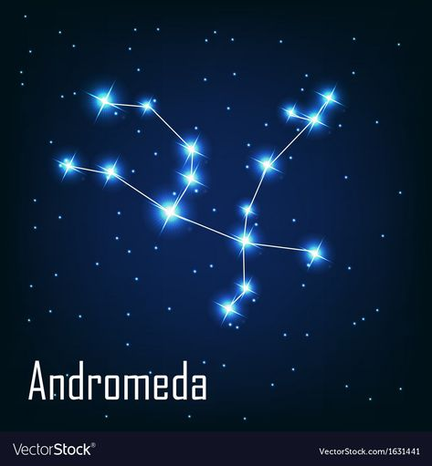

RUANG KONSTELASI
Tentang Rasi Bintang
Rasi bintang atau konstelasi adalah sekelompok bintang yang tampak berhubungan membentuk suatu konfigurasi khusus. Dalam ruang tiga dimensi, kebanyakan bintang yang kita amati tidak memiliki hubungan satu dengan lainnya, tetapi dapat terlihat seperti berkelompok pada bola langit malam. Manusia memiliki kemampuan untuk menciptakan dan kemudian mengenali pola dan sepanjang sejarah telah mengelompokkan bintang-bintang yang tampak berdekatan menjadi rasi-rasi bintang. Susunan rasi bintang yang tidak resmi, yaitu yang dikenal luas oleh masyarakat tetapi tidak diakui oleh para ahli astronomi atau Himpunan Astronomi Internasional, juga disebut asterisma. Bintang-bintang pada rasi bintang atau asterisma jarang yang mempunyai hubungan astrofisika; mereka hanya kebetulan saja tampak berdekatan di langit yang tampak dari Bumi dan biasanya terpisah sangat jauh.
Pengelompokan bintang-bintang menjadi rasi bintang sebenarnya cukup acak dan kebudayaan yang berbeda akan memiliki rasi bintang yang berbeda pula, sekalipun beberapa yang sangat mudah dikenali biasanya sering kali ditemukan, misalnya Orion atau Scorpius. Himpunan Astronomi Internasional telah membagi langit menjadi 88 rasi bintang resmi dengan batas-batas yang jelas, sehingga setiap arah hanya dimiliki oleh satu rasi bintang saja. Pada belahan bumi (hemisfer) utara, kebanyakan rasi bintangnya didasarkan pada tradisi Yunani, yang diwariskan melalui Abad Pertengahan.
Himpunan Rasi Bintang
The Contellations
Andromeda

Andromeda merupakan suatu rasi bintang yang melambangkan putri Andromeda di langit utara dekat Pegasus. Rasi ini cukup panjang dan redup, membentuk huruf "A". Rasi ini terkenal dengan Galaksi Andromedanya.
Dalam mitologi Yunani, Andromeda adalah putri Cepheus dan Cassiopeia. Ibu mengira dia dan putrinya lebih cantik daripada bidadari Poseidon mana pun, dan dia mengejek Dewa Laut sampai dia tidak tahan lagi. Poseidon menghukum ibu vane dengan merantai putrinya dalam keadaan telanjang di batu, untuk dikorbankan kepada monster laut yang mengerikan. Beberapa penulis mengidentifikasi monster ini dengan Cetus, konstelasi lain.
Perseus, yang baru saja membunuh Medusa Gorgon, sedang lewat. Tertarik oleh kecantikan Andromeda, dan tidak diragukan lagi peluang heroik yang ditawarkan oleh situasi tersebut, dia setuju untuk menyelamatkannya. Tapi hanya jika dia bisa menikahi Andromeda setelahnya. Cepheus dan Cassiopeia tidak ingin putri mereka menikah dengan Perseus, tapi mereka tidak punya pilihan, jadi setuju. Perseus meluncur di atas air, sehingga membingungkan monster itu, dan kemudian memenggal kepala monster itu. Pernikahan menyusul segera setelahnya. Di pesta pernikahan, kerabat mengganggu prosesnya, mungkin karena desakan Cassiopeia. Dalam huru-hara berikutnya Cassiopeia dan Cepheus kehilangan nyawa mereka. Poseidon menempatkan keduanya di surga. Belakangan Athene menempatkan Andromeda di wilayah langit yang sama, antara ibu dan ayah.
Lyra
Lyra merupakan suatu rasi bintang yang sering dijuluki sebagai rasi bintang kecapi. Dalam mitologi Yunani, kecapi ditemukan oleh Hermes. Ketika masih kecil, dia menarik usus sapi melewati cangkang kura-kura, dan dengan demikian menciptakan kecapi. Hermes memberikan kecapi ini kepada saudara tirinya Apollo (keduanya ayah Zeus). Sebagai dewa musik, Apollo diasosiasikan dengan instrumen.
Orpheus diberikan instrumen itu oleh Apollo ketika masih kecil, dan Muses mengajarinya menggunakannya. Bahkan alam sendiri pun berhenti untuk mendengarkan, terpesona oleh musiknya. Namun, sayang sekali, Orpheus dibunuh oleh Baccanthes karena ia tidak menghormati Dionysus. Akhirnya, kecapi Orpheus dibuang ke sungai dan mengapung ke Lesbos, yang terdampar di dekat kuil Apollo. Apollo kemudian meyakinkan Zeus bahwa instrumen tersebut harus menjadi konstelasi. Zeus yang iba memerintahkan seekor elang untuk mengambil kecapinya dan menempatkan keduanya di langit sebagai konstelasi Lyra.
Aquila
Aquila merupakan suatu rasi bintang yang sering dijuluki Sang Elang. Dalam mitologi Yunani, Aquila disebut sebagai konstelasi kuno yang sejarahnya dikaitkan dengan dewa-dewa Yunani. Kisah yang paling sering diceritakan adalah kisah Hebe, putri Zeus dan Hera, yang menikah dengan Heracles.
Hebe adalah dewi awet muda dan dia muncul dalam upacara sebagai pembawa cangkir resmi. Namun, dia melepaskan jabatannya setelah menikah dan Zeus mencari pengganti yang cocok, yaitu Ganymede. Zeus menyamar sebagai elang atau mengirim Elang Kerajaannya. Konstelasi Aquila melambangkan elang yang membawa pergi masa muda. Akhirnya Zeus memasang gambar Ganymede sendiri di langit sebagai dewa pembawa air, Aquarius.
Orion
 Orion merupakan suatu rasi bintang yang sering disebut-sebut sebagai sang pemburu. Rasi ini mungkin merupakan rasi yang paling terkenal dan mudah dikenali di angkasa. Bintang-bintang terangnya terletak pada ekuator langit dan terlihat dari seluruh dunia, sehingga membuat rasi ini dikenal secara luas. Orion adalah penguasa langit musim dingin. Dia menguasai langit dari akhir musim gugur hingga awal musim semi.
Orion merupakan suatu rasi bintang yang sering disebut-sebut sebagai sang pemburu. Rasi ini mungkin merupakan rasi yang paling terkenal dan mudah dikenali di angkasa. Bintang-bintang terangnya terletak pada ekuator langit dan terlihat dari seluruh dunia, sehingga membuat rasi ini dikenal secara luas. Orion adalah penguasa langit musim dingin. Dia menguasai langit dari akhir musim gugur hingga awal musim semi.
Dalam mitologi Yunani, Orion dikenal sebagai "penghuni gunung", dan terkenal karena kehebatannya baik sebagai pemburu maupun sebagai kekasih. Namun, ketika ia membual bahwa pada akhirnya ia akan memusnahkan semua binatang liar di bumi, nasibnya mungkin telah ditentukan. Dewi Bumi sendiri yang mengirimkan kalajengking mematikan ke Orion. Namun, Orion melawan kalajengking dalam pertempuran. Apollo menyaksikan perjuangan Orion melawan kalajengking. Dalam perburuan abadinya, Orion berhati-hati agar tetap berada di depan kalajengking. Karena itu, Zeus memasang gambar Orion di langit.
Cassiopeia
Cassiopeia merupakan suatu rasi bintang di belahan utara yang melambangkan ratu legenda dari Ethiopia, Cassiopeia, yang merupakan istri dari Cepheus dan ibu dari Andromeda. Rasi ini adalah salah satu dari 88 rasi bintang modern, dan juga satu dari 48 yang didaftar oleh Ptolemy. Dalam mitologi yunani, Dia adalah istri Raja Cepheus dari Yope dan memiliki seorang putri bernama Andromeda. Mereka berdua adalah wanita cantik, sedemikian rupa sehingga Ratu Cassiopeia melakukan dosa memastikan bahwa dia dan putrinya lebih cantik dari bidadari laut dikenal sebagai Nereids. Nereid adalah putri dari seorang bijak yang tinggal di laut bernama Nereus. Ketika Nereid mendengar dari Cassiopeia bahwa mereka lebih cantik dari mereka, mereka tersinggung dan pergi ke Poseidon untuk membalas dendam. Poseidon tidak setuju dengan pernyataan seperti itu dan menggunakan trisula untuk membanjiri semua tanah di pantai Palestina. Selain itu, dia menelepon monster Cetus untuk menyerang dari dalam. Satu-satunya cara adalah dengan mengorbankan putrinya Andromeda ke Cetus. Untuk itu, Andromeda dirantai di bebatuan pantai Joppa.
Kemudian, ketika pernikahan antara Perseus dan Andromeda berlangsung, Phineus, pelamar Cassiopeia kuno yang agak cemburu, muncul. Dia memerintahkan pasukan 200 prajurit melawan Perseus dan yang ini, mengambil kepala medusa yang terpenggal untuk membatu semua prajurit. Akhirnya, sebagai hukuman atas semua yang terjadi, Poseidon menempatkan Cassiopeia dalam postur yang tidak senonoh dan tidak menarik di surga.
More Information